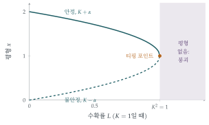

STEP II 1995, 문제 8
계속 읽기 전에 문제를 먼저 읽어 보자. 문제는 STEP Support Programme의 문제 데이터베이스에 있다: step.maths.org/questions/95-s2-q8
도입
먹이가 무한한 개체군은 지수적으로(exponentially) 증가한다. 하지만 실제 개체군은 공간이 부족해진다. 개체군이 환경이 감당할 수 있는 크기, 곧 수용력(carrying capacity)에 가까워질수록 증가가 느려진다. 이를 나타내는 가장 단순한 모형인 로지스틱 방정식(logistic equation)이 문제의 앞부분에 나오며, 이 방정식은 배양 접시 속 세균에서 새로운 기술의 확산에 이르기까지 온갖 현상을 설명한다.
문제의 뒷부분은 실용적으로 매우 중요한 질문을 던진다. 개체군을 일정한 비율로 수확(harvest)하면 어떻게 될까? 수확량이 어떤 문턱값보다 작으면 개체군은 더 낮은 새로운 평형(equilibrium)에 맞추어 자리를 잡는다. 그러나 수확량을 그 문턱값보다 조금이라도 늘리면 평형이 사라지고 개체군은 0으로 붕괴한다. 이것이 어장 붕괴 뒤에 숨은 수학이며, 어획 할당량이 존재하는 이유이다.
시작하기 전에
무엇이든 풀기 전에, 증가율 \((2K - x)x\)를 \(x\)의 함수(function)로 보고 그래프를 그려 보자. 어디에서 0이 되는가? 어디에서 양수인가? 이로부터 \(x\)가 어떻게 움직일지 알 수 있는가?
증가율은 \(x = 0\)과 \(x = 2K\)에서 0이고, 그 사이에서는 양수이며, \(2K\)보다 큰 곳에서는 음수이다. 따라서 \(0\)과 \(2K\) 사이에서 출발한 개체군은 \(2K\)를 향해 증가하고, \(2K\)보다 큰 값에서 출발한 개체군은 그 값을 향해 감소한다. 수용력은 \(2K\)이고, 증가가 가장 빠른 곳은 \(x = K\)이며 이때 증가율은 \(K^2\)이다. 방정식을 풀지 않고도 장기적인 거동을 예측할 수 있다.
차근차근 풀기
단계 1 로지스틱 방정식 풀기
변수를 분리하자(separation of variables): \(\displaystyle\int \frac{\mathrm{d}x}{(2K - x)x} = \int \mathrm{d}t\). 좌변을 부분분수(partial fractions)로 나누어 보자.
\(\dfrac{1}{(2K - x)x} = \dfrac{1}{2K}\left(\dfrac1x + \dfrac{1}{2K - x}\right)\)이므로 \[\frac{1}{2K}\ln\frac{x}{2K - x} = t + C.\] \(t = 0\)일 때 \(x = K\)이므로 \(\ln 1 = 0\)이고 \(C = 0\)이다. 그러면 \(\frac{x}{2K - x} = e^{2Kt}\)이고, 따라서 \[x = \frac{2Ke^{2Kt}}{1 + e^{2Kt}} = \frac{2K}{1 + e^{-2Kt}} = K + K\frac{1 - e^{-2Kt}}{1 + e^{-2Kt}}. \qed\] 이 분수는 \(\tanh(Kt)\)이므로 \(x = K + K\tanh Kt\)이다. 이는 \(K\)에서 출발하여 \(2K\)를 향해 올라가는 S자 모양의 곡선이다. \(t \to \infty\)일 때 \(e^{-2Kt} \to 0\)이고 \(x \to 2K\)이다.
단계 2 수확
세균을 비율 \(L\)로 제거하면 \[\frac{\mathrm{d}x}{\mathrm{d}t} = (2K - x)x - L.\]
\((2K - x)x - L\)을 완전제곱식으로 고쳐 보자(completing the square). 그 영점은 어디인가?
\((2K - x)x - L = K^2 - L - (x - K)^2 = \alpha^2 - (x - K)^2 = \bigl(\alpha - (x - K)\bigr)\bigl(\alpha + (x - K)\bigr)\)이다. 평형점은 \(x = K \pm \alpha\)이다.
이제 \(y = x - K + \alpha\)로 치환(substitution)하자. \(y\)는 어떤 방정식을 만족하는가? 원래의 로지스틱 방정식과 비교해 보자.
\(y = x - K + \alpha\)로 두면 \(x - K = y - \alpha\)이므로 \(\alpha + (x - K) = y\)이고 \(\alpha - (x - K) = 2\alpha - y\)이다. 따라서 \[\frac{\mathrm{d}y}{\mathrm{d}t} = (2\alpha - y)y,\] 이는 \(K\)를 \(\alpha\)로 바꾼 로지스틱 방정식 그대로이다. 처음 값은 \(y(0) = K - K + \alpha = \alpha\)로, 첫 부분의 \(x(0) = K\)와 정확히 같은 꼴이다. 그러므로 1단계에 의해(\(K\) 대신 \(\alpha\)를 넣으면) \(y(t) = \alpha + \alpha\tanh\alpha t \to 2\alpha\)이고, 따라서 \[x(t) = K + \alpha\tanh\alpha t \to K + \alpha. \qed\]
돌아보기
정성적 분석이 먼저이다. 증가율의 부호만으로, 아무것도 풀기 전에 장기적인 거동을 예측할 수 있었다.
완전제곱식이 평형점을 드러낸다. 수확이 있는 방정식의 평형점은 \(K \pm \alpha\)였다.
치환으로 새로운 문제를 이미 푼 문제로 바꾼다. 변수를 평행이동하자 수확이 있는 방정식이 이미 풀어 본 로지스틱 방정식으로 바뀌었다.
숨은 수학
수확이 있는 방정식에는 두 평형점 \(K + \alpha\)와 \(K - \alpha\)가 있다. 위쪽 평형점은 안정(stable)하다. 개체군이 그보다 약간 크거나 작아도 다시 그 값으로 돌아온다. 아래쪽 평형점은 불안정(unstable)하다. \(K - \alpha\)보다 조금이라도 작은 개체군은 줄어들어 멸종한다. 수확률 \(L\)이 커지면 \(\alpha = \sqrt{K^2 - L}\)이 작아지고 두 평형점은 서로 가까워진다. \(L = K^2\)에서 두 평형점은 하나로 합쳐지고, \(L > K^2\)이면 평형점이 전혀 없어 모든 개체군이 붕괴한다(그림 8.3.1). 이것이 안장-마디 분기(saddle-node bifurcation)로, 가장 단순한 종류의 티핑 포인트(tipping point)이다. 무서운 점은 이를 미리 알려 주는 극적인 징후가 전혀 없다는 것이다. \(L\)이 \(K^2\)에 가까워지는 동안 평형 개체군은 완만하게 줄어들 뿐이다가, 갑자기 평형이 사라진다. 그 뒤에 수확량을 줄여도 소용이 없을 수 있는데, 개체군이 이미 불안정한 문턱값 아래로 내려갔을 수 있기 때문이다.

최대 지속 가능 수확량
개체군이 지속적으로 감당할 수 있는 가장 큰 수확량은 얼마일까? 그것은 증가율 \((2K - x)x\)의 최댓값인 \(L = K^2\)이며, 개체군을 수용력의 절반인 \(K\)로 유지할 때 얻어진다. 수산학은 20세기 중반에 이 “최대 지속 가능 수확량(maximum sustainable yield)”을 관리 목표로 채택했다. 그러나 정확히 최댓값만큼 수확하면 계는 정확히 티핑 포인트에 놓이게 되고, 그곳에서는 \(K\)를 아주 조금만 과대평가하거나 한 해만 흉년이 들어도 붕괴가 일어난다. 뉴펀들랜드(Newfoundland) 앞바다의 그랜드뱅크스(Grand Banks) 대구 어장은 500년 동안 세계에서 가장 풍요로운 어장 가운데 하나였지만 1990년대 초에 붕괴했고, 1992년 캐나다 정부는 조업 중단 조치(moratorium)를 내려 수만 명이 일자리를 잃었다. 어족 자원은 아직도 완전히 회복되지 않았다.
다른 곳의 로지스틱 성장
로지스틱 방정식은 1838년 페르휠스트(Pierre-François Verhulst)가 인구를 모형화하기 위해 제안했다. 같은 S자 곡선이 초기 단계의 전염병 확산, 신기술의 보급, 자기촉매 화학 반응, 종양의 성장을 설명한다. 이산 시간 버전인 로지스틱 사상(map)은 매우 다르게 행동한다. 8.7 절에서 보겠지만, 이 사상은 카오스적(chaotic)일 수 있다.
사고 기술
방정식 \(x' = f(x)\)에서 평형점은 \(f\)의 영점이며, 평형점 사이에서 \(f\)의 부호를 보면 해가 어느 쪽으로 움직이는지 알 수 있다.
\(f\)가 양수에서 음수로 바뀌는 평형점은 안정하고, 음수에서 양수로 바뀌는 평형점은 불안정하다. \(f\)의 그래프를 그리면 아무것도 풀지 않고도 중요한 질문에 답할 수 있는 경우가 많다.
더 도전하기
낮은 곳에서 출발하기. 수확이 있고 \(K^2 > L\)일 때, \(x(0) < K - \alpha\)이면 개체군이 유한한 시간 안에 0에 도달함을 보여라. (힌트: \(y(0) < 0\)이면 \(y\)는 어떻게 되는가?)
남획. \(L > K^2\)이면 \(\beta = \sqrt{L - K^2}\)로 두자. \(x(0) = 2K\)일 때 \(x' = -(x - K)^2 - \beta^2\)을 풀고, 개체군이 0에 도달하는 시각을 구하여라.
비례 수확. 대신 개체군의 일정한 비율을 제거한다고 하자: \(x' = (2K - x)x - hx\). 평형점을 구하고, 모든 \(h < 2K\)에 대하여 개체군이 살아남음을 보여라. 이 정책이 더 안전한 이유는 무엇인가?
도달 시간. 수확이 없는 경우, 개체군이 \(\frac32K\)에 도달하는 시각을 구하여라.
더 읽을거리
Steven Strogatz, Nonlinear Dynamics and Chaos (CRC Press). 비선형 동역학과 카오스. 3장은 분기를 다루며, 이 수확 모형이 연습문제로 나온다.
Nicholas Britton, Essential Mathematical Biology (Springer). 학부생을 위한 개체군 모형.
Mark Kurlansky, Cod: A Biography of the Fish That Changed the World (Penguin). 대구 어업의 역사와 그 붕괴.